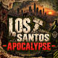

Dein Spielstil ist deine Entscheidung.
Spiele Survival, RP oder eine Mischung aus beidem. Du musst weder eine Rolle darstellen noch Gespräche, Verletzungen oder Handlungen ausspielen. Fehlendes RP ist kein Regelverstoß.

LOST SANTOSAPOCALYPSE RegelwerkEIN HANDBUCH FÜR DIE, DIE BLEIBEN.
Zwanzig Jahre nach der Zombie-Katastrophe ist Los Santos ein anderer Ort. Hier geht es ums Überleben, um Begegnungen und darum, gemeinsam etwas aus dem zu machen, was geblieben ist.
Unser Miteinander Ingame & Community · kurz erklärt01 / DEIN PLATZ IN LOST SANTOS
Zwanzig Jahre nach der Zombie-Katastrophe bietet Los Santos Raum für deinen eigenen Weg. Du kannst mit Freunden Vorräte sammeln, die Welt erkunden und einfach Survival spielen. Du kannst genauso eine Rolle entwickeln und Geschichten mit anderen erleben.
RP-Spieler und Nicht-RP-Spieler sind gleichermaßen willkommen. RP ist in jeder Form freiwillig.
Es gibt keine Pflicht zu Ich-RP, einer Hintergrundgeschichte, bestimmten Gesprächen oder zur Teilnahme an Szenen. Eine Begegnung verpflichtet dich zu nichts. Du kannst ein RP-Angebot jederzeit ablehnen oder eine Szene verlassen, ohne dich dafür rechtfertigen zu müssen.
Die beiden Fraktionen und die Spielsysteme bieten viele Anknüpfungspunkte für RP. Ob und wie du sie dafür nutzt, bleibt dir überlassen. Niemand wird wegen seiner Entscheidung für oder gegen RP abgewertet oder bestraft.
02 / INGAME
Fairness gilt für alle. Verpflichtende RP-Regeln gibt es hier nicht.
Spiele Survival, RP oder eine Mischung aus beidem. Du musst weder eine Rolle darstellen noch Gespräche, Verletzungen oder Handlungen ausspielen. Fehlendes RP ist kein Regelverstoß.
Lade andere zu deiner Geschichte ein und akzeptiere ein Nein. Niemand darf in eine RP-Szene hineingezogen oder zum Mitspielen gedrängt werden. Wer RP spielt, darf das in Ruhe tun; wer darauf verzichtet, genauso. Macht euch die gewählte Spielweise nicht gegenseitig schlecht und stört andere nicht gezielt.
In der PvP-Zone darfst du Gegner ohne vorheriges Gespräch, ohne Ankündigung und ohne RP-Vorgeschichte angreifen und eliminieren. Dafür wird niemand wegen fehlenden RPs bestraft. Freiwilligkeit beim RP hebt die Spielmechaniken und das PvP-Risiko nicht auf: Ein Nein zu RP ist kein Schutz vor regulärem PvP.
Außerhalb der PvP-Zone gelten die dort festgelegten Schutz- und Kampfregeln. Diese Aussage gibt keine zusätzlichen Angriffe oder Basenüberfälle frei.
Keine Cheats, kein bewusstes Ausnutzen von Fehlern und kein Umgehen von Schutzmechaniken. Melde Fehler, statt dir damit Vorteile zu verschaffen. Eine freiwillige RP-Szene zu beenden ist erlaubt; dadurch lassen sich laufende Spielmechaniken oder reguläre Kampfhandlungen nicht für andere aufheben.
03 / COMMUNITY
Im Spiel, auf Discord und überall, wo wir als Community zusammenkommen.
Persönliche Beleidigungen, Diskriminierung, Drohungen und Belästigung haben hier keinen Platz. Respektiere persönliche Grenzen und veröffentliche keine privaten Informationen anderer.
Niemand muss sich dafür rechtfertigen, RP zu spielen oder darauf zu verzichten. Ungefragtes Bewerten, Belehren oder Lächerlichmachen anderer wegen ihrer Spielweise passt nicht zu unserer Community. Sachliche Rückmeldungen zu Regeln und Mechaniken sind willkommen.
Ein verlorener Kampf oder unterschiedliche Fraktionen sind kein Anlass für persönliche Angriffe. Klärt Unstimmigkeiten ruhig. Bei ernsten oder wiederholten Problemen holt das Team dazu, statt öffentlich gegen andere Stimmung zu machen.
Vermeide Spam und absichtliches Stören in Text- und Sprachkanälen. Fragen und unterschiedliche Meinungen sind erlaubt. Begegne neuen Spielern mit Geduld und akzeptiere, wenn jemand gerade für sich oder mit seinen Freunden spielen möchte.
WAS UNS WICHTIG IST
Ob mit Rolle oder einfach unter Freunden:
Spiel so, wie es dir Spaß macht, und gönne anderen dasselbe.